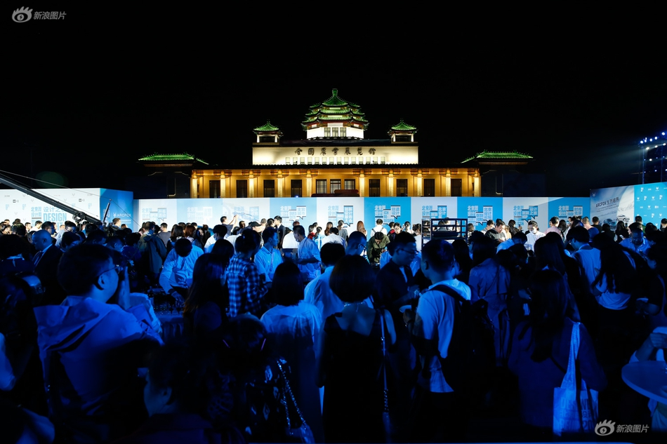

9月12日，2019北京国际设计周设计之路蓝毯仪式暨设计博览会启动在全国农展馆盛大开幕。在200余名中外嘉宾的共同见证下，北京市副市长王红，北京市委宣传部副部长、北京国际设计周组委会秘书长赵磊，北京市委宣传部副巡视员、北京市文化创意产业促进中心主任梅松，北汽集团党委常委、副总经理蒋自力等相关领导上台共同启动本届设计博览会。
北京市副市长王红在致辞中表示，“本届设计周依托北京设计博览会等示范平台，聚合各方优质资源，为北京及全球经济社会发展打造新引擎。衷心期待博览会的所有参与者能够发挥创意设计的想象力，为全人类创造更加美好的生活”。作为北京国际设计周的重头戏，设计博览会已历10年，是国内外最具创新力的设计企业及设计师交流和展示灵感的全景舞台。图为2019北京设计博览会展区现场。
据悉，本届展览会集中构建“源创力量、智创城市、艺创生活、云创社区、梦创未来”五大板块内容，为卓富远见的设计相关产业提供联结通融、共生共赢的平台。图为2019北京设计博览会CCIP展区现场。
2019北京设计博览会3号馆展区现场。